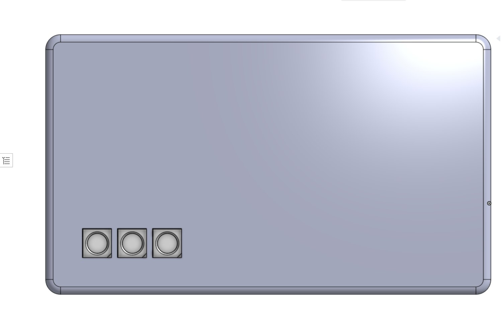
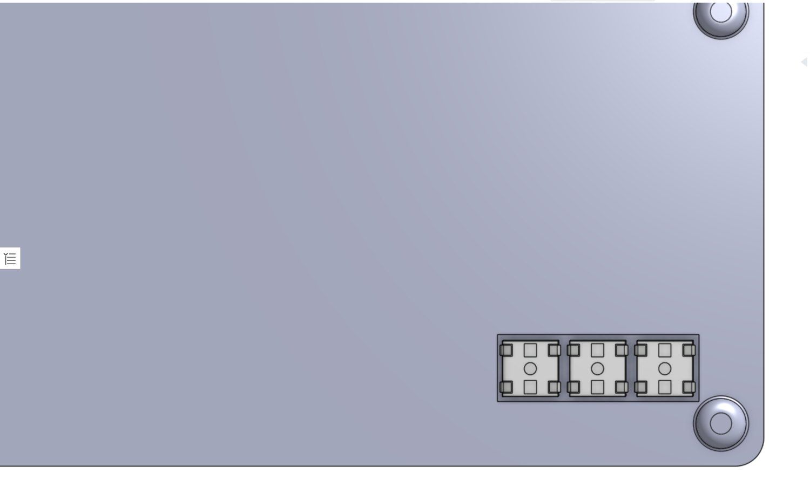
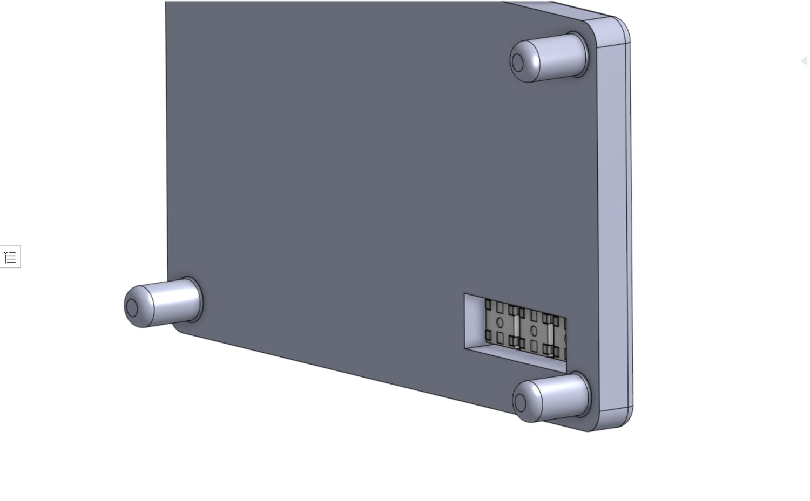
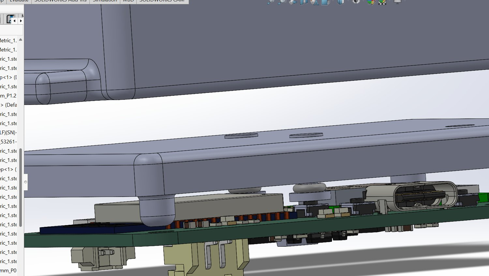

Button Actuation Mechanism
Mechanical Design Internship — Meemo · Summer 2025
{kind=link}
Section through the button stack. The whole mechanism lives between the inside face of the shell and the top of a switch.
Overview
As a mechanical design intern at Meemo I designed the three-button input mechanism and the status-indicator integration for the Wristbuddy, a parent–child locating device worn and used one-handed, often without looking. It was the opposite of a clean-sheet problem: the enclosure existed, the board existed with its switches already placed, and neither the shell’s outer form nor the board layout was mine to move — so the entire design space was the few millimetres between the inside face of the top shell and the top of a tactile switch. I:
- Designed a capped-plunger button stack through the top shell
- Arrayed three buttons on the same pitch as the switches on the board
- Integrated an addressable RGB status indicator into the shell
- Verified the packaging in assembly against the fully populated board model
- Printed the mechanism and tested it by hand against the switches
Goals & Requirements
- Three front-panel inputs findable by feel and pressed one-handed
- Work entirely within the fixed enclosure and board — switch placement frozen
- Retention from below, so the button cannot fall out through the front
- Travel matched to the switch, with over-travel limited so a press can’t exceed the switch’s rated stroke
- One status-light opening driving all the device’s status colours
Design
Each button is a capped plunger. The cap sits proud of the shell so it can be found and pressed without looking. The stem passes through a through-hole in the shell wall that guides it and keeps it square, so an off-centre press still actuates cleanly instead of binding. A retention collar below the shell face is larger than the through-hole, so the button cannot fall out through the front — and it also sets the rest position, which is what fixes the travel. The gap from plunger tip to switch dome sets how far the cap moves before actuation, and the collar bottoming out limits over-travel. Three of these sit in an array on the same pitch as the switches on the board.
{kind=link}

The array as the user sees it.
{kind=link}

The same features from inside — pockets, guides and retention.
The status indicator is one addressable RGB package driving all the device’s status colours from a single opening, rather than a separate LED per state. The work there was placement, not electronics: putting the emitter and its aperture where the light reads clearly from outside without fouling anything already occupying that volume inside.
{kind=link}

The indicator recess in the shell.
Verification came in two steps. First, the shell went into an assembly with the fully populated board model — every connector, module and passive in place — to check that the plungers land on their switches, nothing collides through the travel, and the connectors stay reachable with the shell closed. Then the mechanism was 3D printed and pressed by hand against the switches, to check the things CAD can’t: whether the plunger actuates without binding off-centre, whether the collar retains it, and whether the press feels like a button rather than pushing on a wall.
Motion study of the two halves closing — the board carries the plungers down onto the base.
{kind=link}

Closed, against the populated board.
Outcomes
- Three-button mechanism travel-matched to the board’s tactile switches, verified in assembly against the fully populated board model
- Single-opening addressable RGB status indicator integrated into the existing shell
- Printed part actuated cleanly when pressed off-centre, retained by its collar, and felt like a button under hand testing
Scope note: this is mechanism design and packaging — I did no wiring and no firmware; the indicator is placed and integrated mechanically, not driven. Validation was functional hand-testing of one printed part, with no instrumented measurement and no tolerance stack, and no photos of that printed build survive.